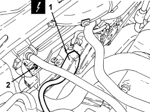
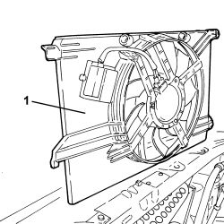
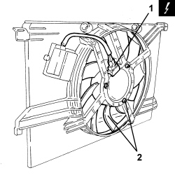
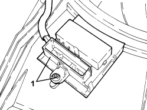

1088E10 RADIATOR COOLING FAN - R + R
- Path
- Procedures > 10 ENGINE > 1088 ENGINE COOLING > 1088E COOLANT TEMPERATURE CONTROL DEVICES > 1088E10 RADIATOR COOLING FAN - R + R
- Kind
- repair procedure (removal / refitting; the operation number is the code)
- Applies to
- engines: 1.8; all production periods
- Interactive page
- https://sloeber94.github.io/elrnDB-fCrm/en/#/194003042
Applies to: engines: 1.8; all production periods
 Removing
Removing
 Refitting
Refitting1. Disconnect the resistor electrical connection.
Description | Connector | |
|---|---|---|
1 | Engine fan adjustment resistance - 1 | See O010 ENGINE FAN ADJUSTMENT RESISTANCE - 1 |
2. Undo the upper bolts securing the fan to the radiator.

Applies to: engines: 1.8; all production periods
- Open the retaining clips and move the system water supply pipe to one side.
1. Lift up the fan from the lower fastenings and remove it.

Applies to: engines: 1.8; all production periods
1. Disconnect the electrical connection for the fan motor.
Description | Connector | |
|---|---|---|
1 | Engine fan motor -1 |
2. Undo the bolts and remove the fan from the duct.

Applies to: engines: 1.8; all production periods
1. If necessary, undo the bolt and remove the resistor.

Applies to: engines: 1.8; all production periods
Refitting
Removing- Place the fan in its housing on the duct and tighten the bolts.
- Connect the electrical connection for the fan motor.
- Refit the radiator fan in its seat complete with duct and secure it to the radiator using the bolts.
- Place the system water supply pipe in position and close the retaining clips on the duct.
- Connect the resistor electrical connection.